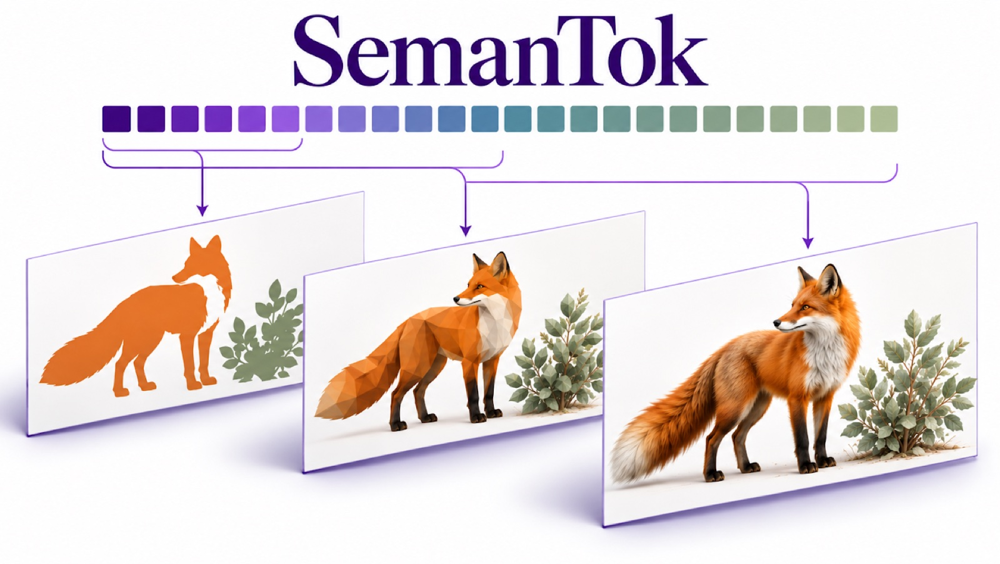

Predictable Semantic Tokens for Efficient Autoregressive Video Generation
Video world models such as NVIDIA's Cosmos Predict use fixed-length tokenizers, spending the same number of tokens on a static shot as on a busy scene. SemanTok makes video tokens flexible and meaning-first: every token prefix already carries what the clip shows, so a generator can stop early and stay faithful.
47× smaller model, better semantic alignment
3.4× smaller model, same or better video fidelity
+11–24% image fidelity at equal size